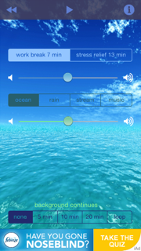

| Description |
Innovative |
Useful |
|
| A well designed iOS meditational app |
The first ten sessions begin with animations to demonstrate best meditational practices and transition right into the meditational session. |
The product is useful because it provides structured lessons on meditating rather than just a timer. The product also provides instructions on how to apply lessons after the meditation session is done and to make you more aware. It is also useful because the app is the only equipment you need to perform the task. There are specific sessions focused on anxiety or for SOS situations. |
|
| Unobtrusive |
Honest |
Environmentally Friendly |
| There are a few email prompts to purchase after the free take 10 sessions which are slightly obtrusive. However, the app itself is unobtrusive. |
Headspace gives you 10 free sessions to try it out before purchasing. This offer gives the consumer the opportunity to get a feel for it before committing and paying. However, they do use persuasive design to make users consistent in using the app. |
The content encourages you to think about your motivations for doing meditation and encourages you to think how it will positively impact those around you.Also there's a lack of visual pollution. |
| Understandable |
Little Design as Possible |
Long Lasting |
| The product is quite self explanatory when it comes to choosing sessions, ending a session, pausing a session. |
Headspace makes the goal clear from the start with the logo -an orange colored circle. The goal is not to visually stimulate you with the graphics but to simplify the visuals to process. This simple design is clear when you start a session and there’s one white circle on an orange background with a play/pause button in the middle, info about the number and time of lesson above, and an “x” providing the option to exit in the corner. The circle is not ornamental during the session, it is marking time. |
The sessions are set up in levels so it involves the psychological motivation of closure. There are badges that are checked upon completion and the badges you need to complete are left unchecked and in clear view. Also, there’s the partial reinforcement that if you complete 27 sessions in a row you can give a friend one month of headspace free. This is a delayed reward to motivate consistent long lasting behavior. However, after sessions are all completed, I may not continue spending money on Headspace. |
| Detailed |
Aesthetic |
| I think the designers paid attention to detail to avoid unnecessary visual pollution and to make functions intuitive. Also, I don't find an arbitrary detal on this app. |
Dieter Rams says that “only well-executed objects can be beautiful.” I believe it is a well executed app. It is also number 1 on huffington post’s meditational app list. |
| Description |
Innovative |
Environmentally Friendly |
|
| A badly designed iOS meditational app |
User can select background sound during meditation session |
There is a lot of visual pollution making it hard to understand the app.There is also no option to forgo the sound options. |
 |
| Unobtrusive |
Honest |
Useful |
| The background picture and the similar colored text are obtrusive. They get in the way of meditating peacefully because it is an initial struggle to understand the information. |
Only one part of the app is free. The downloaded Take a Break app includes links to the purchaseable apps that are specifically focused on certain issues. This makes it seem like this is a promotional app rather than a valid app. The validity of the app is also brought into question due to its aesthetics. |
There is no motivation provided like Headspace where sessions are accounted for or different levels provided to accomplish. |
| Understandable |
Little Design as Possible |
Long Lasting |
| This app is not easily understandable. Once you select the one free option, there is no obvious way to get back to the home screen. You have to swipe right, which was not written anywhere for any amount of time. The text is blue on top of an image of blue water which makes text harder to read. Also, you must find out that the first volume controller is for the speaker and the second for the background noise by assumption or trial and error. |
They seemed to assume an image background behind light text was adding value but really it complicates and decreases validity of the app. |
The non-intuitive functions and lack of persuasive design makes me conclude that this will not be a long lasting app. |
| Detailed |
Aesthetic |
| There is lack of detail when labelling/explaining volume controllers and moving back to the homescreen. |
I don't believe this app to be well executed because of the non-intuitive functions, the difficulties placed upon understanding text, and the lack of detail and options. |
| Description |
Innovative |
Environmentally Friendly |
|
| A well designed blender |
There are fewer parts because some standard parts have combined functionality. For example, the top clear part works as a drinking cup as well as the tumbler which you use to blend. The blade also works as a cap for the blending bowl and the piece that fits into the motor. |
All parts of the product are reusable and easy to clean. There is also minimal visual pollution. |
 |
| Unobtrusive |
Honest |
Useful |
| The Magic Bullet is unobtrusive in the sense that it takes up little space to store. Also, the bullet works for a variety of the user’s purposes/allows for user’s self expression. |
The product comes with a warranty which is reassuring. There’s a feeling that the customer is thought of by providing multiple parts. The product comes with enough blades to give options on cutting different types of food. Also, there are different colored cup rings to distinguish between cups and for easier drinking. The feeling that the customer’s care is prioritized gives the feeling that the customer is not being manipulated. |
It is useful to blend small quantities quickly. It is useful that you do not have to transfer the blended ingredients into another cup to drink. It is also easy to clean because there are no nooks and crannies for food to seep into. |
| Understandable |
Little Design as Possible |
Long Lasting |
| The assembly is intuitive and the blender won’t start working until assembled correctly, which also makes the product safe. What is not intuitive, at least to me, is which blade is supposed to be used for which types of foods. |
The product’s design eliminated the need for certain standard parts. For example, there are standard parts like the cover, the bottom bowl, motor, and separate blade. The Magic Bullet has a bottom blade which fits into the motor and acts as a cover for the blender bowl and the bowl also works as a cup. |
I think this could be a long lasting product because of its varied purposes and because its easy to use. |
| Detailed |
Aesthetic |
| Every part of the Bullet is necessary to complete its function and there is no extraneous part or groove that is apart of it. |
I believe the Bullet to be well executed in all its details and limited parts. |
| Description |
Innovative |
Environmentally Friendly |
|
| A poorly designed blender |
The innovative part of the ninja is that the motor fits a small and large ninja blender. Other than that, the ninja proves to be a blender with some hassles. |
The product easily collects food in hard to reach places. It also has a lot of parts. |
|
| Unobtrusive |
Honest |
Useful |
| It is obtrusive because of its inconveniences such as cleaning and the large number of parts. |
The way the motor fits into a small and larger blender seems like a benefit to the customer. However, there are also extraneous parts that don't add value to the product. |
It is hard to clean because of the small grooves which makes the top cover lock and the space between the blades and the lower bowl. It is easy to lose essential parts because there are four blades, two tops, two blender bowls, and one motor |
| Understandable |
Little Design as Possible |
Long Lasting |
| The blades do not fit in one particular way and they are supposed to be used for the large and small blender. However, the different blades fit together more than one way. |
There are more parts than necessary, as proved by the bullet. |
I don't think it will be long lasting because there are easier to use and efficient blenders. |
| Detailed |
Aesthetic |
| The product does not seem detailed enough to prevent improper assembling and proper maintenance care. |
It is not a well executed product compared to the bullet. There are details and parts that make it harder to understand and become obtrusive. |
| Description |
Innovative |
Environmentally Friendly |
| A well designed iOS app |
It is actually not that innovative. Flixter has a better idea to include Rotten Tomatoes reviews. |
Lower visual pollution and content breakage than the Flixter app. |
| Unobtrusive |
Honest |
Useful |
|
| It is unobtrusive in the sense that content is not broken and the designers have made more use of the mobile space than the Flixter app. |
The ads are hidden and not breaking the content flow. The users' needs seem to be more central due to this organization of content. |
It is useful to check many different theaters for showtimes of many different movies. |
|
| Understandable |
Little Design as Possible |
Long Lasting |
| The actions and navigation are easier to figure out than Flixter.The options are more apparent. |
The designers include less information but this makes more use of the mobile space. |
The functionalities are useful, which I think will make it long lasting. |
| Detailed |
Aesthetic |
| The option to find quick information about theaters and movies from one page while leaving out extraneous information (actor names and director names) indicates the appropriate amount of detail. |
It is a well executed app considering how much information is available and how the appropriate information is easily accessible. |
| Description |
Innovative |
Unobtrusive |
|
| A poorly designed iOS app |
Moviefone does the same thing but Flixster has rotten tomatoes. |
The advertisements are obtrusive in the way they break content |
 |
| Environmentally Friendly |
Honest |
Useful |
| I think this app brings about a lot of visual pollution especially when you compare to the Moviefone app. There’s repetitive information on the home screen and then presented again on following pages. The ads and part of the app content are too intertwined. |
It doesn’t seem honest because of the priority given to advertisements/easiness to click on them |
It is useful to see what theaters are around and the rotten tomatoes review all in one place. However, Moviefone’s home screen involves an option to search theaters near you and then continues to list all the movies that are currently playing. Flixster has split up functionality where movies playing are on one page and theater selection is on another page. I think Moviefone having this dual functionality on one page makes it more useful. Also, when you click a movie off of the box office page, the next proceeding page is information about the movie but it does not contain information about what theaters are playing this movie. The user has to select the showtimes option which goes to a page that seems to only have the option to select a location because an advertisement blocks the location options so it is not clear you have to scroll down. |
| Understandable |
Little Design as Possible |
Long Lasting |
| The need for instructions to guide the user makes it more understandable but also means that favoriting theaters is not an instinctive/intuitive function. |
There are so many pages rather than doubling up on some functionalities. |
I don’t think it will last a while because of its non-intuitive features. |
| Detailed |
Aesthetic |
| It does not seem that thorough because of extra pages when doubling up on functionality on certain pages could be a solution |
“only well-executed objects can be beautiful”
It is not well executed. As shown in this image, the creators of this app placed the option to edit the user’s location near the advertisements. It is easy to accidentally click the advertisement, the advertisement breaks the content, and the advertisement and “theaters” header is more noticeable than the option to change locations. Also, to favorite a theater, the user has to select a theater which leads to another screen to favorite it. It seems like there could have been stars placed on the left of the screen so people could favorite a theater. |